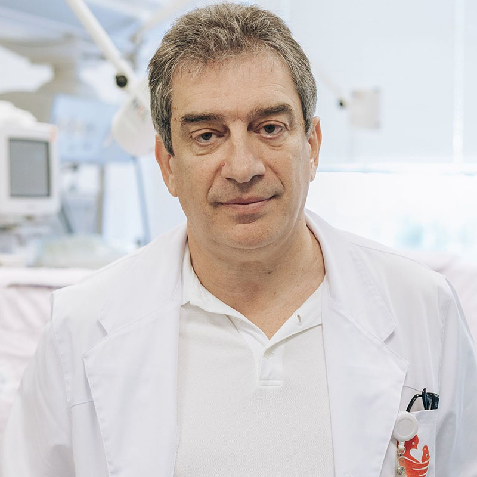

-

Institutul Central de Reumatologie
-

Aveți grijă de articulații
-

Centrul articulațiilor puternice
-

Articulații sănătoase
-

Sunt superbunică!
Din cauza durerii din genunchi și din spate, abia puteam merge. Pastilele, injecțiile și operațiile nu au avut niciun efect asupra mea. Dimpotrivă: au luat bani și energie de la mine. Nu știam ce să fac. Din fericire, am aflat despre acest remediu. Și cât de bine am făcut-o! M-am simțit mai bine de la prima administrare. Într-o lună sau cam așa ceva Mă simt ca nou nouță. Fac plimbări îndelungate și am grijă de grădina pe care am plantat-o împreună cu nepoata mea. Durerea este uitată. Mulțumesc!
-

Simplitate și eficiență
Este greu de crezut că o astfel de metodă simplă este atât de eficientă, este suficient să luați remediul și să vă bucurați de mișcări fără disconfort după câteva săptămâni. Sora mea, verii mei și cu mine l-am folosit și l-am recomandat tuturor. La revedere disconfortul articular.
-

Mă simt necesar.
Anii de muncă grea în companie mi-au uzat genunchii destul de rău. Le-am promis nepoților mei că voi juca fotbal cu ei sau voi merge cu bicicleta, dar nu am putut din cauza durerii. Copiii nu au înțeles aceste lucruri și s-au supărat. M-am simțit inutilă. Până când fiica mea m-a făcut să încerc . Am simțit imediat diferența. A trecut o lună de când o folosesc și mă simt invulnerabil, acum pot petrece timp cu familia, mai ales cu nepoții mei, ca înainte.
-

Mi-am recăpătat viața.
Munca supraponderală și de lungă durată mi-a distrus genunchii, nu am putut suporta durerea, așa că am luat mai mult de 10 pastile pe zi. Dar m-am foarte rău și somnoroasă, nu puteam trăi normal. Din fericire, un coleg de muncă mi-a recomandat acest produs uimitor. Aceasta s-a dovedit a fi soluția perfectă. Durerea a dispărut ca prin farmec și am devenit din nou interesat de munca unui coafor. Mi-am recăpătat sănătatea, ceea ce mi-a permis să încep antrenamentul și... Am dat jos 10 kilograme! Schimbări incredibile.
-
Soția mea a încetat să se plângă.
Acasă, soția mea îmi găsește întotdeauna ceva de făcut: să repar robinetul, să mut dulapul sau să pictez ceva. Cum ar fi trebuit să mă aplec și să mă încordez dacă spatele mă doare? Precum și coatele și genunchii. Din fericire, gelul mi-a ajutat coloana vertebrală și articulațiile să se recupereze. Am simțit că am pierdut greutatea pe care o purtam de ani de zile. Soția mea a încetat să se plângă că nu vreau să o ajut prin casă!
-

M-am întors la muncă
Imaginați-vă cum e să nu miști o mână. E greu, nu-i așa? Anume asta mi s-a întâmplat, pentru că degetele mă dureau, mâinile îmi erau umflate și tremurau. Sunt bijutier, ceea ce fac este meseria și pasiunea mea. A trebuit să-mi închid din ce în ce mai des micul meu atelier, iar din această cauză bani în casă aveam din ce în ce mai puțini. Am început să caut metode de restaurare a articulațiilor și peste tot mi s-a spus că acest produs este cel mai bun . Am încercat fără să verific, dar după 30 de zile mâinile mele au devenit mai sănătoase decât acum 10 ani. Am reușit să mă întorc la muncă!
-

O viață nouă la un preț atât de mic
De obicei, dacă ceva este eficient, trebuie să fie scump. Acesta a fost cazul terapeutului meu de masaj personal, care m-a costat paisprezece mii pe lună și a trebuit să facă minuni. Cu toate acestea, dimpotrivă, a înrăutățit starea, iar articulațiile și coloana vertebrală mă dureau și mai mult. Când cumnatul meu m-a sfătuit să încerc am crezut că a fost un nonsens complet. Cum mă pot ajuta capsulele când presupusul maseur fenomenal nu m-a ajutat? Ar fi trebuit să-mi vedeți fața când durerea a dispărut. Doar un miracol!
-

Singura metodă eficientă
Am încercat diferite metode pentru a scăpa de ronțăit și dureri de șold. Nimic nu m-a ajutat. Ce este încă mai rău, degenerarea s-a răspândit la nivelul coloanei vertebrale. Cu totul s-a întâmplat invers. Nu mai sunt îngrijorat de sănătatea mea, deoarece sunt 100% sănătos!


Într-o lună veți uita de durerea articulațiilor și coloanei vertebrale - efectul este garantat de teste medicale independente
Bună ziua,
Numele meu este Luis Recio, sunt expert, om de știință și specialist în domeniul biologiei moleculare. Aici vreau să vă prezint cea mai mare realizare a vieții mele. Am dezvoltat o metodă prin care oricine poate elimina durerea, precum și să restabilească articulațiile și coloana vertebrală și, în același timp, să recâștige mobilitatea 100% în doar o lună.
Deci, dacă doriți, FĂRĂ remedii chimice și ineficiente să:
- Îndepărtați durerea articulațiilor și coloanei vertebrale - să simțiți ușurarea imediat după aplicarea metodei;
- Restaurați și să întăriți articulațiile, tendoanele, mușchii și coloana vertebrală cu 87% astfel încât acestea să funcționeze ca noi;
- Returnați 100% din sănătatea fizică și să nu vă fie frică să deveniți invalizi;
- Eliminați rigiditatea și amorțirea articulațiilor și coloanei vertebrale, întoarceți confortul și netezimea mișcărilor;
- Protejați articulațiile și coloana vertebrală de distrugere și de a păstra sănătatea fizică absolută pentru mulți ani care vor veni;
- Eliminați degenerarea, inflamația etc. - reduceți durerea și recâștigați confortul în mișcare;
- Restaurați organismul după fracturi, entorse și traume;
- Și datorită acestui lucru aveți de 3 ori mai multă energie și din nou bucurați-vă de viață!
Trebuie să știți că toate acestea pot fi realizate fără operații periculoase, terapie costisitoare, așteptare nesfârșită la coadă pentru specialiști (care renunță, de asemenea, fiind incapabili să vă ajute...) și fără a înghiți substanțe chimice toxice (dăunătoare ficatului, stomacului și rinichilor)... și în sfârșit, să economisiți mii de lei. Dacă doriți să faceți asta, ar trebui să citiți ce vreau să vă spun.
Nu contează câți ani aveți sau cât timp ați suferit de dureri articulare sau a coloanei vertebrale. Nu contează dacă oasele tale scârțâie de 2 zile sau 20 de ani. Chiar dacă un specialist ți-a spus că articulațiile și coloana vertebrală sunt complet distruse și ți-ai pierdut orice speranță de viață normală... Ar trebui să știți asta, deja după o lună, vă veți putea bucura de mobilitate 100% . Fără durere!
Vedeți de ce metoda mea este o alternativă la modalitățile ineficiente de a face față durerii articulare:
- ameliorează durerea imediat după aplicare, iar după cursul de admitere o elimină pentru totdeauna;
- sigur pentru organism: formula macromoleculară este sub formă de capsule 100% naturale care funcționează în deplină armonie cu organismul uman. Prin urmare, nu provoacă intoxicarea organismului și dependența;
- recuperarea chiar și cele mai deteriorate articulații și coloanei vertebrale astfel încât să funcționeze ca noi, fără durere;
- este ușor de luat și toată lumea îl poate lua acasă pe cont propriu, în loc să aștepte în sălile de așteptare ale specialiștilor și să ceară ajutor;
- vă permite să economisiți bani în loc să-l cheltuiți pe substanțe chimice și terapii scumpe și ineficiente.
Am dezvoltat o metodă naturală care vă va restabili articulațiile și coloana vertebrală distruse
Datorită lui veți uita de durerea și teama de invaliditate completă... Toate problemele pe care le suferiți din cauza articulațiilor slabe sau a coloanei vertebrale slabe vor rămâne în trecut. Veți scăpa complet nu numai de durere, ci și de rigiditate, crampe și umflături. În cele din urmă, veți putea face toate lucrurile pe care nu le-ați putut face din cauza durerii.
Veți putea să urcați scările, să vă aplecați, să vă purtați nepoții în brațe fără probleme. Veți fi capabil să aveți grijă de grădină, plimbări, mers cu bicicleta, dans! Și toate acestea se datorează faptului că am reușit să dezvolt o formulă inovatoare pentru restaurarea articulațiilor și revenirea lor la mobilitate completă. Cum am făcut-o?
Am vrut să-mi salvez mama de dizabilități
Conform studiilor recente, unul din trei rezidenți cu vârste cuprinse între 36 și 95 de ani are probleme cu articulațiile sau coloana vertebrală. Acești oameni de multe ori nici măcar nu-și dau seama, cred că este normal ca uneori îi doare corpul, să amorțească sau să facă clic. Cu toate acestea, majoritatea sunt în pericol distrugere semnificativă cartilajul și degenerarea care pot duce la dizabilități.
Din păcate, această problemă a afectat-o și pe mama mea. La început, i-a fost greu să urce scările sau să se ridice de pe canapea. Dar apoi situația s-a înrăutățit... Grădina, de care era atât de fericită să aibă grijă, a început să se umple cu buruieni, pentru că nu putea să aibă grijă de ea. A încetat să ne invite la cine cu toată familia. Devenea din ce în ce mai iritabilă și tristă. Apoi, din cauza durerii la genunchi, șolduri, coloană vertebrală și coate, nici măcar nu se putea spăla.
Acest lucru era periculos pentru viața ei!
Cel mai rău lucru era aceea că imobilitatea a început să-i amenințe viața. Nu voi uita niciodată ziua în care am venit să o iau pe mama să o duc la un specialist în domeniul gastroenterologiei. Mama mea a trebuit să traverseze strada și... a fost aproape lovită de o mașină! Ea mergea foarte încet, din cauza durerii, și dintr-o dată genunchiul ei a devenit atât de nemișcat și dureros că ea nu a mai putut face un pas. Șoferul a frânat în ultimul moment...
Am fost furios când am văzut geanta mamei mele plină de diverse remedii pentru articulații reclamate. S-a dovedit că le lua pe toate. Așa că a devenit clar de ce avea ulcer gastric, probleme hepatice și alte probleme de stomac... Femeia a vrut să facă ceva, dar aceste remedii nu numai că nu i-au ajutat, ci și i-au otrăvit complet organismul.
Cum am inventat "brevetul" pentru articulații indestructibile?
A trebuit să o ajut pe mama să-și recapete articulațiile sănătoase și, împreună cu ele, sănătatea și bucuria vieții. Am vrut ca ea să fie o bunică minunată pentru nepoții mei, la fel cum a fost o mamă minunată pentru mine. Apoi m-am gândit: "Omule, ești om de știință! Ai participat la descoperirea multor substanțe care luptă împotriva diferitelor boli. De ce nu dezvolți un remediu pentru întărirea articulațiilor?" Deci, că am început testele...
Pe parcursul anului am efectuat cercetări intensive de laborator. Am testat diverse combinații de substanțe active pe mama mea. Trebuie să subliniez că totul a fost 100% natural și sigur pentru organism. M-am inspirat din rețetele monastice bazate pe plante și le-am combinat cu cele mai recente progrese în biologia moleculară. Cunoștințele științifice, credința în natură și un vârf de noroc au dat roade rapid: am venit cu o formulă macromoleculară unică.
Am început imediat să efectuez teste la scară largă. Eficacitatea 98% a fost confirmată de cele mai mari Institute de cercetare din Europa și SUA! Chiar și în stadiul de testare, formula mea macromoleculară a restabilit în mod natural funcțiile articulațiilor și coloanei vertebrale la mii de voluntari.
Efecte uimitoare
Durerea mamei mele a scăzut imediat după ce a luat produsul. Era bucuroasă că nu mai era chinuită de durerea pulsantă din genunchi. Dar acesta era doar începutul. După o lună, articulațiile și coloana vertebrală s-au oprit de ronțăit și de a amorți. Apoi, umflarea genunchilor și coatelor a dispărut, toată inflamația articulațiilor și a coloanei vertebrale a dispărut. Mama mea s-a întors să aibă grijă de grădina ei iubită. Cu toții am fost uimiți când s-a urcat brusc pe bicicletă și a mers fericită!
"De ce mergeți atât de încet?"- a întrebat ea cu nerăbdare, când întreaga familie a mers la prânz. Iar noi încă nu am ieșit din obiceiul de a merge încet în prezența ei. După 5 săptămâni, mama mea a mărturisit fericit: "Fiule, articulațiile mele s-au restaurat. Mă simt la fel de vioaie, ca atunci când eram tânără! Ați inventat un remediu pentru durerile articulare! Câți oameni vei ajuta! Vă sunt foarte recunoscătoare." Și într-adevăr, la 85 de ani, mama mea dansa de fericire cu strănepoții ei. Iar oaspeții stăteau cu ochii bombați când au văzut în ce formă se afla!

Mama mea a restabilit complet mobilitatea și, odată cu ea, energia și bucuria vieții.
Până în prezent, deteriorarea articulațiilor și a coloanei vertebrale de-a lungul anilor era inevitabilă. Astăzi, cu ajutorul formulei mele macromoleculare, procesul de uzură a articulațiilor și vertebrelor scheletului uman nu poate fi doar încetinit, ci și inversat.
Permiteți-mi să vă explic exact cum funcționează formula mea super eficientă pentru articulații sănătoase. Acest proces este destul de complicat, dar voi încerca să-l explic astfel, încât să fie de înțeles pentru oricine.
Elimină imediat durerea și restabilește articulațiile 24 de ore pe zi
Articulațiile și coloana vertebrală se uzează de-a lungul anilor, dar se descompun și din cauza excesului de greutate, muncii fizice intense, transportului obiectelor grele, sportului excesiv, rănilor și vânătăilor. Lichidul sinovial și cartilajul sunt distruse. Articulațiile sunt ca o balama neacoperită: încep să se frece și să se degradeze constant. În timp, începeți să simțiți rigiditate și durere teribilă care vă împiedică să vă mișcați normal. Se dezvoltă inflamația și degenerarea severă.
Din păcate, cartilajul și celulele lichidului sinovial nu au capacitatea de a se auto-recupera. Aceasta înseamnă că, spre deosebire de alte celule din organismul uman, ele nu se pot readuce la viață. De aceea, articulațiile și coloana vertebrală se înrăutățesc zi de zi. Desigur, nu veți înceta să mergeți și să faceți treburi de zi cu zi pentru a vă proteja articulațiile și coloana vertebrală. Ar fi absurd.
Prin urmare, sarcina mea a fost să creez o formulă radicală care va elimina durerea, va restabili articulațiile deteriorate și coloana vertebrală și le va proteja de daunele viitoare. Și am reușit! Am dezvoltat o formulă macromoleculară pentru regenerare intensivă. Am numit-o .
Formula unică pătrunde instantaneu în zonele afectate și dezactivează impulsurile electrice de durere la nivel celular astfel încât să puteți merge despre afacerea ta fără durere. Datorită proprietăților sale, stimulează nutriția celulară, care reface procesele regenerative cu 300%. În același timp, ingredientele naturale declanșează procesele de regenerare automată a cartilajului și a fluidului sinovial. Utilizarea regulată a acestei formule este suficientă pentru ca regenerarea să aibă loc 24 de ore pe zi. Faceți ceea ce faceți întotdeauna, iar articulațiile și coloana vertebrală devin mai tinere și restabilesc mobilitatea. Astfel, degenerarea și durerea dispar pentru totdeauna în 30 de zile. Fără efecte secundare!
De ce a fost formula mea macromoleculară numită "antidot miracol pentru durerile articulare"?
MAI MULT DE 98% RESTABILEȘTE EFICIENT ȚESUTUL CARTILAJULUI ȘI LICHIDUL SINOVIAL

ÎNAINTE
O articulație distrusă și afectată de degenerare și durere
DUPĂ
Articulație restaurată: 100% sănătoasă și fără durere
Până acum poate părea un miracol. Cu toate acestea, este un fapt care confirmă cazul mamei mele și a 14 mii de oameni care au reușit deja să restabilească articulațiile puternice și coloana vertebrală, datorită metodei mele. Mai mult, eficacitatea formulei macromoleculare a fost dovedit necondiționat de Centrul german de cercetare din Dortmund. Aceasta este o descoperire la nivel mondial care a câștigat recunoașterea și admirația celor mai buni specialiști în domeniul reumatologiei, ortopediei și neurologiei. Pe de altă parte, continui să primesc scrisori emoționale de la oameni care îmi mulțumesc pentru "recuperarea articulațiilor lor". Acesta este principalul motiv pentru care sunt fericit și mândru de această descoperire.
100% SIGUR ȘI EXTREM DE UȘOR DE UTILIZAT

Ingredientele naturale fac minuni: știința a reușit să creeze compoziția perfectă! Acest motto m-a însoțit atunci când am creat această formulă macromoleculară pentru restaurarea articulațiilor. Doar aplicați o cantitate mică de produs cu mișcări circulare de masaj până când se absoarbe complet de 2-3 ori pe zi și reveniți la o viață deplină! (Efectul depinde de caracteristicile fiecărui organism).
Toți prietenii și rudele care sunt obișnuiți să vă vadă în durere, abia mergând, vor fi uimiți. Când vă vor vede alergând, mergând cu bicicleta și dansând fără durere, nu vor crede că v-ați restabilit articulațiile în 30 de zile!
AMELIORAREA INSTANTANEE A DURERII

TERAPIA NATURISTĂ FĂRĂ EFECTE SECUNDARE


RESTAURAREA ARTICULAȚIILOR ȘI A COLOANEI VERTEBRALE


UȘOR DE UTILIZAT


100% CAPACITĂȚI FIZICE ÎN 30 DE ZILE


SALVAREA A MII DE LEI

Cum puteți pierde o astfel de oportunitate de a învinge durerea și de a vă recâștiga sănătatea pentru totdeauna?
Puteți continua să suferiți de dureri teribile la nivelul articulațiilor și coloanei vertebrale. Puteți, de asemenea, să vă distrugeți sănătatea cu substanțe chimice dăunătoare și să trăiți cu spectrul dizabilității care se ascunde în spatele dvs.? Dar de ce, dacă vă garantez un mod rapid, simplu și ieftin recâștigați-vă sănătatea fără durere? Aveți nevoie doar de 30 de zile pentru a vă alătura la 14.000 de utilizatori mulțumiți de care au învins deja durerea, și și-au restabilit articulațiile și coloana vertebrală, iar acum se bucură de o sănătate bună!
Nu riscați cu nimic!
Utilizând gelul , eliminați instantaneu durerea și restabiliți mobilitatea fizică în 30 de zile. Și nu riscați cu nimic! Ca o realizare mondială, formula mea macromoleculară a primit o garanție triplă prestigioasă: originalitate, calitate și satisfacție.
Garanție triplă de satisfacție
1. Garanția originalității: într-un produsul macromolecular este utilizată formula bazată pe cele mai puternice substanțe care restaurează articulațiile și coloana vertebrală. Eficacitatea sa a fost confirmată prin teste de laborator. Aceasta este singura formulă inovatoare. Prin urmare, puteți fi sigur că veți primi un produs original disponibil numai prin intermediul acestui site web.
2. Asigurarea calității: datorită procesului avansat de fabricație a formulei macromoleculare, acesta îndeplinește cele mai înalte standarde de calitate. Luând în considerare sănătatea și bunăstarea, concentrația substanțelor active este selectată astfel încât terapia să fie complet sigur. Și toate acestea pentru ca acțiunea sa să răspundă așteptărilor dvs. 100%.
3. Garanția satisfacției: numeroase teste de laborator și de consum confirmă creșterea eficienței gelului . Datorită acestor rezultate, remediul a fost recunoscut de specialiști din întreaga lume care îl recomandă clienților lor. Ei sunt convinși că în 30 de zile veți scăpa de durere la nivelul articulațiilor și coloanei vertebrale, precum și veți recâștiga mobilitatea de 100%.
Uitați de durere, restabiliți articulațiile și recâștigați sănătatea fizică 100% în 30 de zile ușor, sigur și economic
Marile companii farmaceutice din SUA și Japonia se luptă literalmente pentru un brevet pentru formula mea macromoleculară. Când o vând, produsul va fi disponibil în întreaga lume, dar, desigur, la un preț exorbitant de ridicat.
Până nu s-a întâmplat acest lucru, am decis sa îl fac disponibil în țara noastră, unindu-se cu un club cu finanțare 50% mai ieftin. Toate pentru a ajuta cât mai mulți oameni din patria mea să scape odată pentru totdeauna de problemele cu articulațiile și a coloanei vertebrale.
Prin urmare, vă îndemn să profitați de această oportunitate! Plasarea comenzii într-un club de reduceri este foarte simplă. Nu trebuie să trimiteți bani sau să plătiți cu cardul pentru a primi produsul. Tot ce trebuie să faceți este să completați formularul în 2 minute și în câteva zile veți primi un pachet pentru care vă va fi convenabil să plătiți curierului.
Vă mulțumesc că v-ați făcut timp să citiți mesajul meu. Vă doresc sănătate bună în noua voastră viață, în care vă veți bucura de o sănătate bună și... În doar 30 de zile, veți dansa, alerga, merge cu bicicleta și veți putea face toate lucrurile pe care durerea le-a limitat până acum!

Specialistul Luis Recio
-
Sunt superbunică!
Din cauza durerii din genunchi și din spate, abia puteam merge. Unguentele, injecțiile și intervențiile chirurgicale nu au avut niciun efect asupra mea. Dimpotrivă: au luat bani și energie de la mine. Nu știam ce să fac. Din fericire, am aflat despre acest remediu. Și cât de bine am făcut-o! M-am simțit mai bine de la prima administrare. Într-o lună sau cam așa ceva Mă simt ca nou nouță. Fac plimbări îndelungate și am grijă de grădina pe care am plantat-o împreună cu nepoata mea. Durerea este uitată. Mulțumesc!
-
Simplitate și eficiență
Este greu de crezut că o astfel de metodă simplă este atât de eficientă, este suficient să luați remediul și să vă bucurați de mișcări fără disconfort după câteva săptămâni. Sora mea, verii mei și cu mine l-am folosit și l-am recomandat tuturor. La revedere disconfortul articular.
-
Mă simt necesar.
Anii de muncă grea în companie mi-au uzat genunchii destul de rău. Le-am promis nepoților mei că voi juca fotbal cu ei sau voi merge cu bicicleta, dar nu am putut din cauza durerii. Copiii nu au înțeles aceste lucruri și s-au supărat. M-am simțit inutilă. Până când fiica mea m-a făcut să încerc . Am simțit imediat diferența. A trecut o lună de când o folosesc și mă simt invulnerabil, acum pot petrece timp cu familia, mai ales cu nepoții mei, ca înainte.
-
Mi-am recăpătat viața.
Munca supraponderală și de lungă durată mi-a distrus genunchii, nu am putut suporta durerea, așa că am luat mai mult de 10 pastile pe zi. Dar m-am foarte rău și somnoroasă, nu puteam trăi normal. Din fericire, un coleg de muncă mi-a recomandat acest produs uimitor. Aceasta s-a dovedit a fi soluția perfectă. Durerea a dispărut ca prin farmec și am devenit din nou interesat de munca unui coafor. Mi-am recăpătat sănătatea, ceea ce mi-a permis să încep antrenamentul și... Am dat jos 10 kilograme! Schimbări incredibile.
-
Soția mea a încetat să se plângă.
Acasă, soția mea îmi găsește întotdeauna ceva de făcut: să repar robinetul, să mut dulapul sau să pictez ceva. Cum ar fi trebuit să mă aplec și să mă încordez dacă spatele mă doare? Precum și coatele și genunchii. Din fericire, gelul mi-a ajutat coloana vertebrală și articulațiile să se recupereze. Am simțit că am pierdut greutatea pe care o purtam de ani de zile. Soția mea a încetat să se plângă că nu vreau să o ajut prin casă!
-
M-am întors la muncă
Imaginați-vă cum e să nu miști o mână. E greu, nu-i așa? Anume asta mi s-a întâmplat, pentru că degetele mă dureau, mâinile îmi erau umflate și tremurau. Sunt bijutier, ceea ce fac este meseria și pasiunea mea. A trebuit să-mi închid din ce în ce mai des micul meu atelier, iar din această cauză bani în casă aveam din ce în ce mai puțini. Am început să caut metode de restaurare a articulațiilor și peste tot mi s-a spus că acest produs este cel mai bun . Am încercat fără să verific, dar după 30 de zile mâinile mele au devenit mai sănătoase decât acum 10 ani. Am reușit să mă întorc la muncă!
-
O viață nouă la un preț atât de mic
De obicei, dacă ceva este eficient, trebuie să fie scump. Acesta a fost cazul terapeutului meu de masaj personal, care m-a costat paisprezece mii pe lună și a trebuit să facă minuni. Cu toate acestea, dimpotrivă, a înrăutățit starea, iar articulațiile și coloana vertebrală mă dureau și mai mult. Când cumnatul meu m-a sfătuit să încerc am crezut că a fost un nonsens complet. Cum mă pot ajuta capsulele când presupusul maseur fenomenal nu m-a ajutat? Ar fi trebuit să-mi vedeți fața când durerea a dispărut. Doar un miracol!
-
Singura metodă eficientă
Am încercat diferite metode pentru a scăpa de ronțăit și dureri de șold. Nimic nu m-a ajutat. Ce este încă mai rău, degenerarea s-a răspândit la nivelul coloanei vertebrale. Cu , s-a întâmplat contrariul. Nu mai sunt îngrijorat de sănătatea mea, deoarece sunt 100% sănătos!
Comentarii:
Ovidiu Voinea
Povestea vieții! Am trecut prin nouă cercuri de iad în spital, prin toate procedurile și torturile terapiei. Articulațiile mele m-au durut și au continuat să mă doară. Încă sufăr de durere chiar și acum. Unde pot găsi acest ?
Luminița Țuțea
Acest remediu nu este vândut în farmacii private! Am fost la toate farmaciile private din oraș! Am comandat aici, remediul a venit repede, în plus, oferă o reducere aici. Am început cursul :)
Gabriel Oană
Am avut două operații. Am fost culcat timp de aproximativ șase luni, recuperarea a fost foarte lungă. Am găsit și o lună mai târziu am uitat de operație, genunchii mi-au încetat să mă doară și să se umfle! Un remediu foarte bun fără efecte secundare
Dragoș Dima
Bunicul meu a luat un cers de și nu a luat niciun alt mijloc. Spune că s-a născut din nou. Înainte de asta, stătea întins în pat toată ziua, iar acum face mereu ceva, îl văd mereu ocupat
Daniel Manole
Lucrez ca antrenor. Articulațiile mele sunt adesea rănite, iar mă ajută. Remediul ameliorează durerea și restabilește rapid articulația deteriorată.
Adela Dârjan
Am făcut patinaj artistic toată viața mea, dar a trebuit să mă opresc... mă dor articulațiile. Nu m-am dus la specialist. Specialiștii prescriu o mulțime de remedii scumpe, dar nu există niciun rezultat. Am avut noroc că mătușa mea lucrează ca specialist și m-a sfătuit să-l caut pe . Aveam nevoie doar de 3 pachete pentru o recuperare completă!
Maria Radu
Acum un an mi-am rănit brațul stâng, cotul mă doare constant. Spitalul a vrut să mă opereze. M-am speriat, am refuzat și m-am dus să caut soluții alternative. Bunica mea mi-a dat îl folosește pentru articulații și o ajută. După primele câteva aplicații, durerea a scăzut, dar disconfortul a rămas, iar apoi gelul s-a terminat... Voi comanda mai mult)
Catalin Rusu
Am reușit să elimin artrita cronică cu ! Într-un singur curs! Soția mea l-a cumpărat pentru mine. Ea a spus că a auzit despre eficacitatea sa și a vizitat toate farmaciile noastre private, iar apoi vânzătorul i-a spus că îl pot cumpăra doar online.
Ovidiu Tămaș
Sunt de acord cu toate comentariile. Acest remediu funcționează cu adevărat! Nu am îndrăznit să-l cumpăr, am încercat o mulțime de unguente, remedii și pastile. Efectul a fost întotdeauna temporar. După aplicare gelului articulațiile au încetat să mai doară pentru totdeauna. Cursul a durat puțin mai mult de o lună.